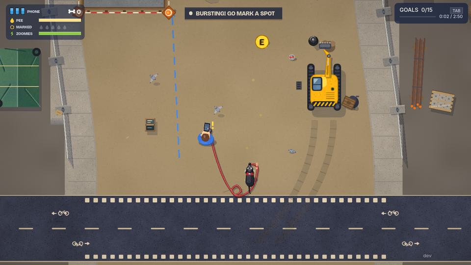
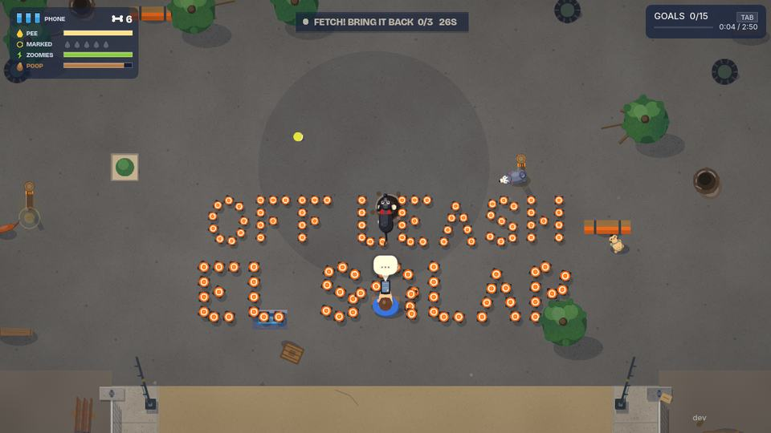

A detour through the roadworks
A classic Barcelona street-trench work zone squeezed between orange safety nets, traffic cones, wet concrete trenches and a yellow digger blocking half the curb before El Solar opens behind the hoardings.

